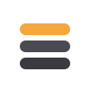

Four marks on the same idea: a stack of sources, the brief on top (amber). Judge them at 16px — that's the favicon.
A · Receding stack
B · Convergence (many → one)
C · Offset panels
D · Flat stack, highlighted top
